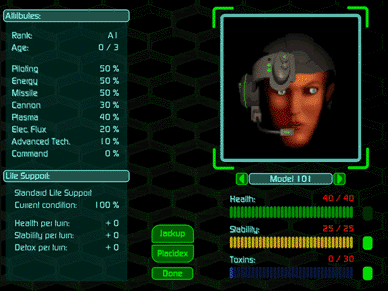

Stimgland
During battle, it is vital that you pay attention to the status of your pilots. Their health deteriorates as their Hercs, or as the Bioderms themselves, take hits. The image in the lower right corner of the Battlefield screen is the first indicator of the ‘derm’s stability. As stability deteriorates, the image will change, reflecting the Genetic Instability of the Bioderm.
 |
Click once on the image of the Bioderm. This takes you to the Pilot Status screen. Here is where you administer StimGland (Jackup or Placidex). Jackup increases a pilot’s chance to hit by up to 6%, but it also lowers Genetic Stability, which remains permanent unless Placidex is used, until healed by a Command Bioderm, or until the Bioderm is healed at the Medvat. The on-board Life Support system will heal, detoxify, and, with very advanced Life Support, stabilize the Bioderm eventually, but very slowly. Jackup also raises a derm’s Toxin Level by up to 10 points. Toxicity can only be removed during Detox at the Medvat or gradually with any advanced Life Support system. |
The only use for Placidex is to counter the Stability loss from Jackup, however, Placidex also raises Toxin buildup by up to 10 points per shot. The threshold levels are zero for Stability and the number displayed for Toxin. You can also read about each Bioderm’s thresholds in the Bioderms Biographies.
The Skill Ratings are shown to provide a visual cue of the Stimgland enhancements. Below those are the specifications on the Life Support system. These numbers indicate how the Life Support affects Health, Stability, and Toxin levels per turn.